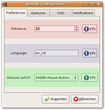
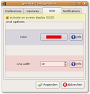
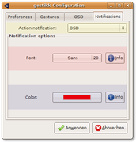
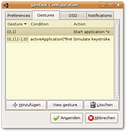
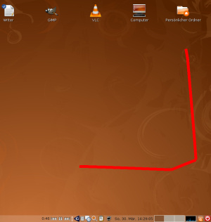

gestikk
Archivierte Anleitung
Dieser Artikel wurde archiviert, da er - oder Teile daraus - nur noch unter einer älteren Ubuntu-Version nutzbar ist. Diese Anleitung wird vom Wiki-Team weder auf Richtigkeit überprüft noch anderweitig gepflegt. Zusätzlich wurde der Artikel für weitere Änderungen gesperrt.
Zum Verständnis dieses Artikels sind folgende Seiten hilfreich:
gestikk 
 ist eine in Python geschriebene Anwendung, die fast alle Fenstermanager unterstützt (das heißt, es sollte alle freedesktop.org-NetWm-konformen unterstützen), die vorher festgelegte Mausgesten erkennt und definierte Aktionen ausführt. So lässt sich zum Beispiel mit der Geste "nach unten - links" der Browser Firefox starten oder die Tastenkombination
Alt +
Strg +
⌫ simulieren, welche die grafische Oberfläche (den XServer) neu startet. gestikk bietet rund um die Mausgestenerkennung noch einige nützliche Features wie z.B. das Anzeigen der Geste auf dem Bildschirm, solange sie gezeichnet wird, die Benachrichtigung, wenn eine Geste erkannt wird (als Balloontipp und als "On Screen Display").
ist eine in Python geschriebene Anwendung, die fast alle Fenstermanager unterstützt (das heißt, es sollte alle freedesktop.org-NetWm-konformen unterstützen), die vorher festgelegte Mausgesten erkennt und definierte Aktionen ausführt. So lässt sich zum Beispiel mit der Geste "nach unten - links" der Browser Firefox starten oder die Tastenkombination
Alt +
Strg +
⌫ simulieren, welche die grafische Oberfläche (den XServer) neu startet. gestikk bietet rund um die Mausgestenerkennung noch einige nützliche Features wie z.B. das Anzeigen der Geste auf dem Bildschirm, solange sie gezeichnet wird, die Benachrichtigung, wenn eine Geste erkannt wird (als Balloontipp und als "On Screen Display").
Installation¶
Abhängigkeiten¶
Bekannt unterstütze Fenstermanager: Metacity (GNOME), KWin (KDE), xfwm4 (XFCE), Fluxbox, Matchbox, Awesome, WindowMaker, IceWm, Openbox ...
Um gestikk zu verwenden müssen folgende Pakete installiert [1] werden:
python-gtk2
python-glade2
python-notify
python-virtkey
python-kiwi (universe [2])
 mit apturl
mit apturl
Paketliste zum Kopieren:
sudo apt-get install python-gtk2 python-glade2 python-notify python-virtkey python-kiwi
sudo aptitude install python-gtk2 python-glade2 python-notify python-virtkey python-kiwi
Des Weiteren muss Pyparsing installiert sein. Ist folgendes Paket installiert
python-setuptools
mit apturl
Paketliste zum Kopieren:
sudo apt-get install python-setuptools
sudo aptitude install python-setuptools
kann Pyparsing ganz einfach über
sudo easy_install pyparsing
installiert werden.
Installation von gestikk¶
Über Paket¶
gestikk 0.6 lässt sich über das hier erhältliche Debian-Paket für Ubuntu Hardy Heron installieren [3].
Hinweis!
Fremdpakete können das System gefährden.
Über Tarball¶
Wer möchte, kann gestikk auch über den auf der gleichen Seite erhältlichen Sourcetarball installieren. Dazu muss dieser heruntergeladen und in ein beliebiges Verzeichnis entpackt werden [4]. Anschließend wird die Anwendung gestikk.py ausführbar gemacht [5].
Entwicklungsversion¶
Wer die (unstabile) Entwicklungsversion ausprobieren möchte, kann sich den aktuellen Entwicklungszweig von Launchpad (Bazaar) herunterladen. Durch
bzr branch lp:gestikk
wird die Mausgestenanwendung in den Unterordner gestikk heruntergeladen. Wieder muss gestikk.py ausführbar gemacht werden [5].
Hinweis:
Die Entwicklungsversion ist nicht für den "produktiven" Einsatz geeignet, da sie Fehler und/oder unfertig Features enthalten kann. Diese bitte nur zum "Reinschnuppern" in die nächste Version nutzen!
gestikk starten¶
Paketinstallation¶
Wer gestikk über das Paket installiert hat, kann die Anwendung ganz einfach mit dem Befehl
gestikk
bzw.
gestikk -c
für die grafische Konfigurationsoberfläche) starten [6] oder diesen Befehl mit jeder Sitzung automatisch starten lassen [7].
Tarball- und Bazaarinstallation¶
Wer gestikk über den Sourcetarball oder die Entwicklungsversion über Bazaar installiert hat, muss in einem Terminal erst in das gestikk-Verzeichnis wechseln und kann dort mit dem Befehl
python gestikk.py
(bzw.
python gestikk.py -c
für die grafische Konfigurationsoberfläche) starten [6].
Konfiguration¶

Allgemeine Optionen¶
In diesem Abschnitt werden allgemeine Optionen festgelegt.
| Option | Beschreibung |
| Toleranz | Definiert die Toleranz bei der Erkennung der Gesten |
| Sprache | Definiert die Sprache, die gestikk verwenden soll |
| Gestenschalter | Legt fest, welche Taste auf der Maus oder Tastatur während dem Durchführen einer Geste gedrückt sein muss |
On Screen Display¶
 In diesem Abschnitt werden Option zum Anzeigen der Geste (während dem Durchführen derselben) auf dem Bildschirm festgelegt.
| Option | Beschreibung |
| Aktiviere OSD | Legt fest, ob das Anzeigen der Geste auf dem Bildschirm aktiviert werden soll |
| Farbe | Legt die Farbe fest, die zum Anzeigen verwendet werden soll |
| Liniendicke | Legt die Dicke der Gestenlinie fest |
Benachrichtigungen¶
 In diesem Abschnitt werden Optionen zur Benachrichtigung des Anwenders im Falle einer durch gestikk erkannten Geste festgelegt.
| Option | Beschreibung |
| Aktionsbenachrichtigung | Legt fest, ob und auf welche Art der Anwender über eine erkannte Geste informiert werden soll |
| Schriftart | Legt im Falle einer aktivierten OSD-Benachrichtigung fest, welche Schriftart für selbige verwendet werden soll (Schriftfamilie, Größe) |
| Farbe | Legt im Falle einer aktivierten OSD-Benachrichtigung fest, welche Schiftfarbe für selbige verwendet werden soll |
Gesten definieren¶
 gestikk kann über den Reiter "Gesten" im Konfigurationsdialog mit Gesten "gefüttert" werden.
Per Klick auf "Hinzufügen" kann eine neue Geste hinzugefügt werden. Diese muss dazu zwei mal groß im sich öffnenden Fenster gezeichnet werden. (Nicht zu schnell!)
Sofern die Geste von gestikk erkannt wurde, kann für diese nun eine Aktion festgelegt werden - man hat dafür die Auswahl zwischen "Kommando" und "Tastendruck". Bei Ersterem kann ein Befehl festgelegt werden, den gestikk dann startet.
Hinweis:
Wenn gestikk über Strg + C beendet wird, werden auch alle durch gestikk gestarteten Prozesse und Anwendungen beendet!
Bei "Tastendruck" kann eine Tastenkombination festgelegt werden, die gestikk simulieren soll.
Konditionen¶
Einer Geste kann seit Version 0.5 eine Kondition, das heißt eine Bedingung, zugewiesen werden - die Aktion wird also nur dann ausgeführt, wenn diese Bedingung erfüllt wird. Beispiel: Der Geste "nach unten - links" wird die Kondition "Firefox ist im Vordergrund" zugewiesen. Wird diese Geste nun durchgeführt und der Dateimanager Nautilus befindet sich im Vordergrund, verfällt die Geste. Dies bietet den Vorteil, dass man z. B. mit der Geste "nach unten - links" verschiedene Aktionen festlegen kann - abhängig von der aktiven Anwendung: So kann mit einer Geste in jeder Anwendung die gleiche Aktion durchgeführt werden (z. B. "Zurück" oder "Schließen"), auch wenn dafür in den verschiedenen Anwendungen andere Tastenkombinationen verwendet werden müssten. Die möglichen Konditionen sind:
| Kondition | Beschreibung |
| activeApplication(”Prozess”) | Prüft, ob der Prozessname der sich im Vordergrund befindenden Anwendung Prozess ist |
| activeApplication_startswith(”Prozess”) | Prüft, ob der Prozessname der sich im Vordergrund befindenden Anwendung mit Prozess beginnt |
| activeApplication_endswith(”Prozess”) | Prüft, ob der Prozessname der sich im Vordergrund befindenden Anwendung mit Prozess endet |
| activeApplication_contains("Prozess") | Prüft, ob der Prozessname der sich im Vordergrund befindenden Andwendung Prozess enthält |
| activeWindowTitle(”Titel”) | Prüft, ob der Fenstertitel der sich im Vordergrund befindenden Anwendung Titel ist |
| activeWindowTitle_startswith(”Titel”) | Prüft, ob der Fenstertitel der sich im Vordergrund befindenden Anwendung mit Titel beginnt |
| activeWindowTitle_endswith(”Titel”) | Prüft, ob der Fenstertitel der sich im Vordergrund befindenden Anwendung mit Titel endet |
| activeWindowTitle_contains("Titel") | Prüft, ob der Fenstertitel der sich im Vordergrund befindenden Anwendung Titel enthält |
| activeWorkspace(”Nummer”) | Prüft, ob die aktive Arbeitsfläche Nummer ist (beginnend bei 1) |
Die Konditionen lassen sich mit den Schlagwörtern (ähnlich wie bei einer Suchmaschine) "or", "and" und "not" sowie mit Klammern (ähnlich wie bei mathematischen Termen) kombinieren.
Beispiele¶
Beispiel 1¶
Möchte man eine für eine Geste bestimmte Aktion nur dann durchführen, falls sich der Firefox-Browser im Vordergrund befindet, kann dies mit der folgenden Kondition angegeben werden:
1 | activeApplication("firefox-bin") |
Hinweis:
Gerade bei Browsern, Editoren, Musikwiedergabesoftware oder Ähnlichem sollte die Kondition nicht vom Fenstertitel, sondern vom Prozessnamen abhängen, da diese meist ihre Fenstertitel je nach aktiver Seite oder Datei ändern.
Hinweis:
Der Prozessname einer Anwendung kann im Konditionsdialog mit einem Klick auf "Aktualisieren" herausgefunden werden. Dazu versteckt sich gestikk für fünf Sekunden, in denen dann zur Zielapplikation gewechselt werden muss. gestikk erkennt daraufhin den Prozessnamen dieser Anwendung.
Beispiel 2¶
Die Kombination mit "and" funktioniert folgendermaßen:
1 | activeApplication("firefox-bin") and activeWindowTitle_endswith("Wikipedia - Mozilla Firefox") |
Diese Kondition überprüft, ob der Prozess der aktiven Anwendung "firefox" ist und der Fenstertitel mit "Wikipedia - Mozilla Firefox" endet. Die Aktion wird also nur dann ausgeführt, wenn sich während dem "Malen" der Geste eine Wikipedia-Seite im Vordergrund befindet.
Hinweis:
Für Entwicklungsversionen von Firefox und natürlich anderen Browsern den Fenstertitel entsprechend anpassen!
Beispiel 3¶
Mit der folgenden Konditionszeile wird die definierte Aktion durchgeführt, wenn entweder der Standarddateibrowser Nautilus im Vordergrund ist und die aktive Arbeitsfläche die Nummer "3" trägt oder man sich auf der ersten Arbeitsfläche befindet:
1 | (activeApplication("nautilus") and activeWorkspace("3")) or activeWorkspace("1") |
Beispiel 4¶
Folgende - wenn auch etwas wirr und nutzlos erscheinende - Kondition bewirkt, dass die Gestenaktion nur dann ausgeführt wird, wenn sich bei der Durchführung
Firefox im Vordergrund befindet
eine Seite von ubuntuusers geöffnet ist (das heißt, sich ubuntuusers im Fenstertitel befindet)
ein Thread im ubuntuusers-Forum angeschaut wird
man sich auf der vierten oder dritten Arbeitsfläche befindet
oder Thunderbird die aktive Anwendung ist.
1 | ((activeApplication("firefox-bin") and activeWindowTitle_contains("ubuntuusers") and activeWindowTitle_contains("Thema anzeigen")) and activeWorkspace("3") or activeWorkspace("4")) or activeApplication("thunderbird") |
Globale Kondition¶
Eine "global condition" ist eine gestenübergreifende Kondition, die erfüllt werden muss, damit die Aktion ausgeführt wird. Diese Kondition gilt für alle Gesten und nicht nur für eine einzelne. Sie gilt zusätzlich zu den gestenspezifischen Konditionen.
Benutzung¶
Sobald gestikk gestartet wurde, taucht im Benachrichtigungsfeld (Systray) das gestikk-Logo auf: gestikk läuft jetzt im Hintergrund und wartet darauf, dass Gesten durchgeführt werden. Diese können einfach überall auf dem Desktop ausgeführt werden: Dazu wird der Gestenschalter (z. B. die mittlere Maustaste) gedrückt und die Geste "auf den Bildschirm gemalt":

Wer die Benachrichtigung eingeschaltet hat, der wird jetzt entweder via On Screen Display oder via Balloontipp darüber informiert, dass eine Geste erkannt wurde.
Feedback/Links¶
Feedback¶
Wer eine Rückmeldung zu gestikk abgeben möchte, einen Bug gefunden hat, Verbesserungsvorschlage einbringen will oder ein bestimmtes Feature vermisst, der kann dies über die Launchpad-Projektseite tun.
- Erstellt mit Inyoka
-
 2004 – 2017 ubuntuusers.de • Einige Rechte vorbehalten
2004 – 2017 ubuntuusers.de • Einige Rechte vorbehalten
Lizenz • Kontakt • Datenschutz • Impressum • Serverstatus -
Serverhousing gespendet von